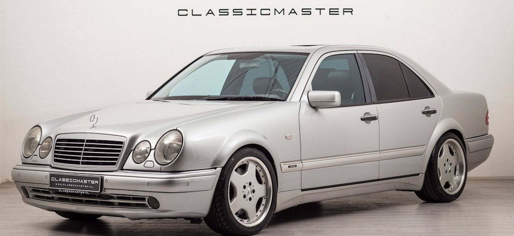
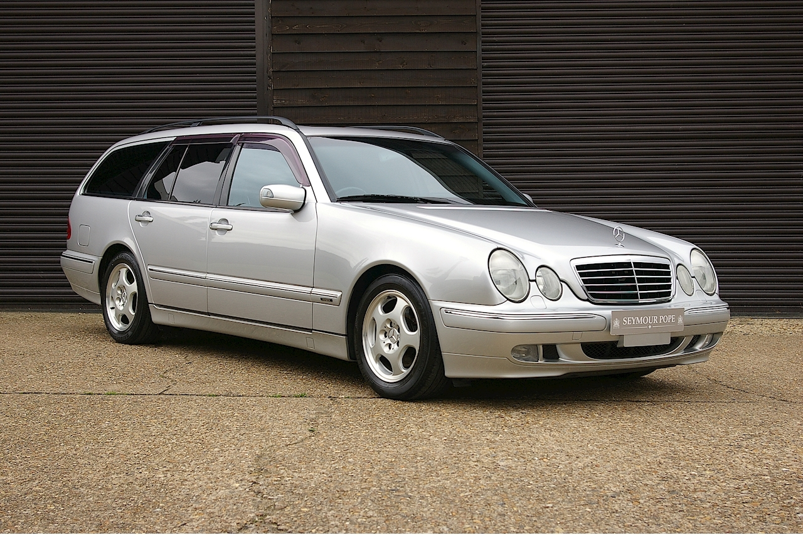
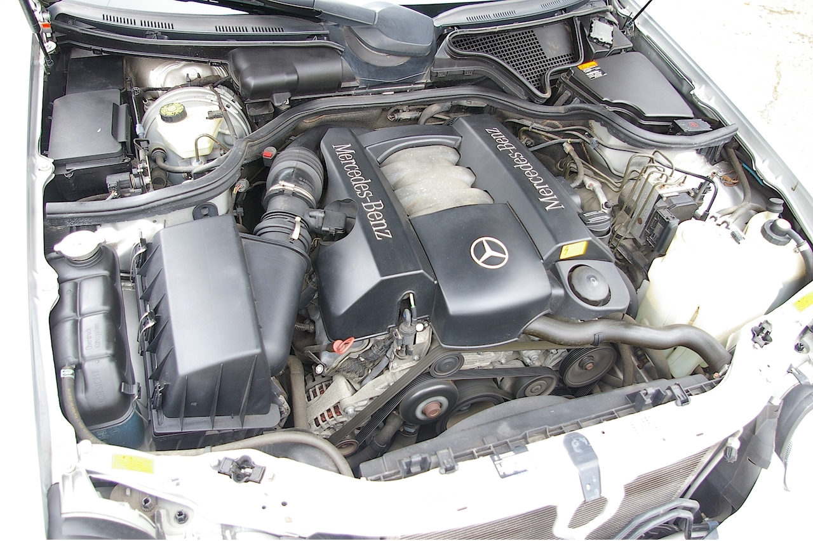
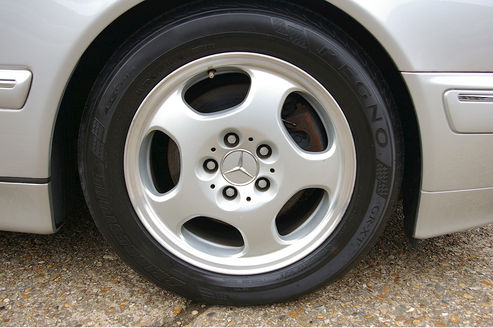

Mercedes-Benz W210 — второе поколение легковых автомобилей E-класса немецкой торговой марки Mercedes-Benz.
Пришло на смену Mercedes-Benz W124 и производилось с 1995 по 2003 год. Автомобиль выпускался в кузове седан (W210) по 2002 год  и универсал (S210) по 2003 год . Начиная с 1997 года компания начала внедрять целый ряд двигателей нового поколения, и рядные шести-цилиндровые M104 были заменены на V6 M112. . Новые 16 или 17-дюймовые легкосплавные диски с дизайном из пяти отверстий стали стандартом данной линии исполнения. .
Drive2
Description
- Silver color
- Big size like TLC
- 18"wheels